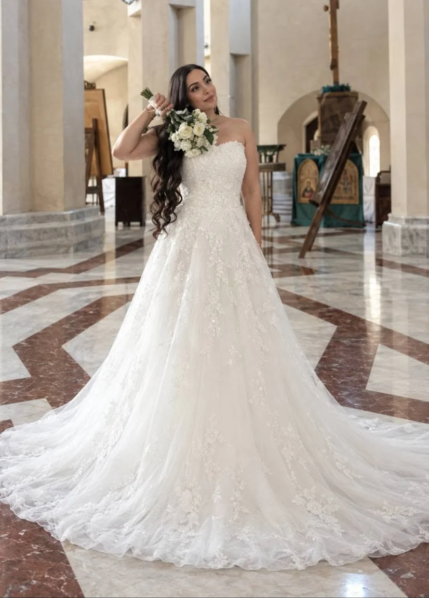
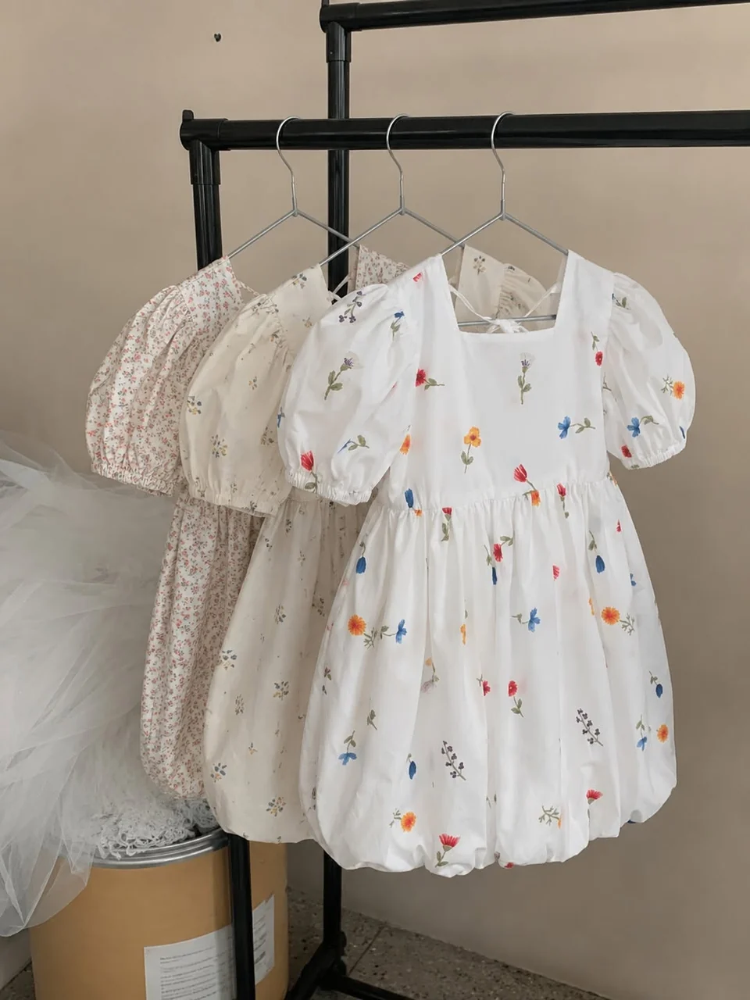
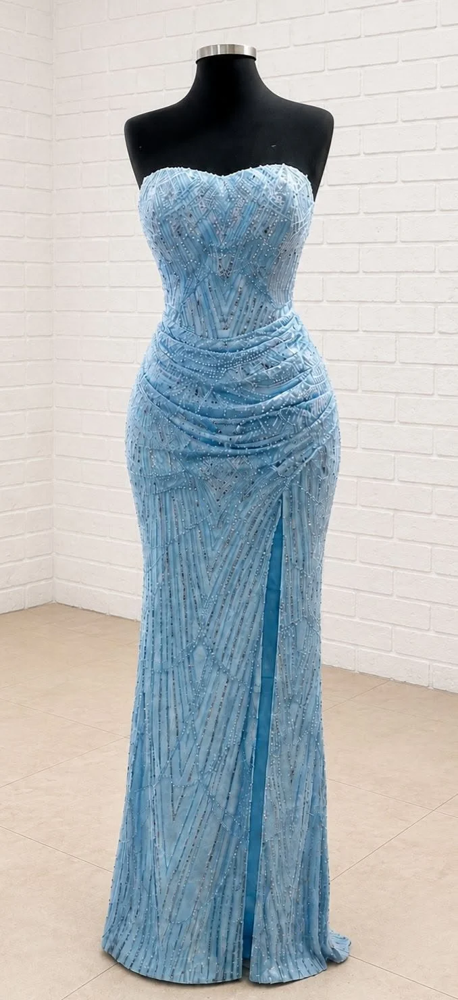
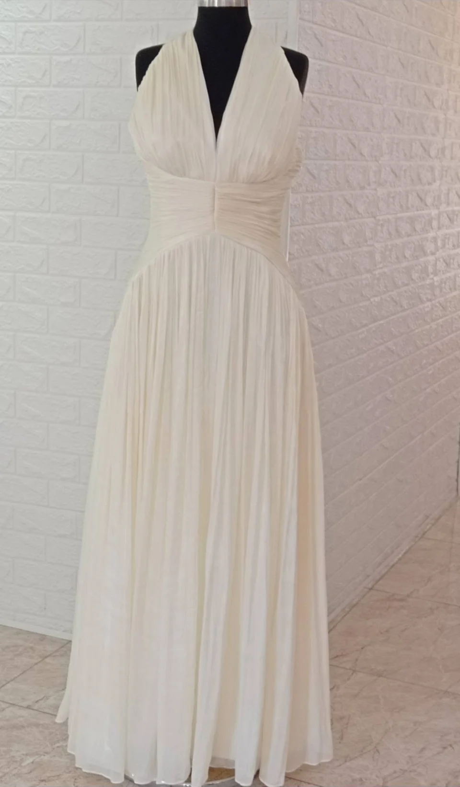
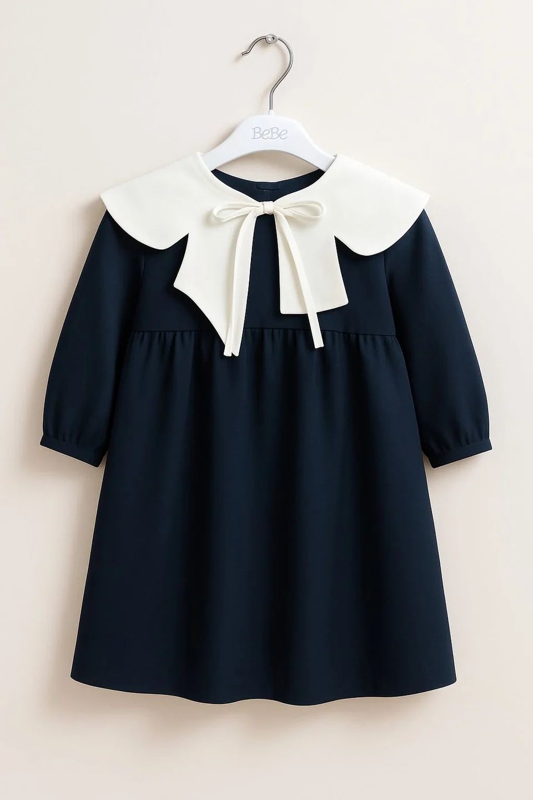
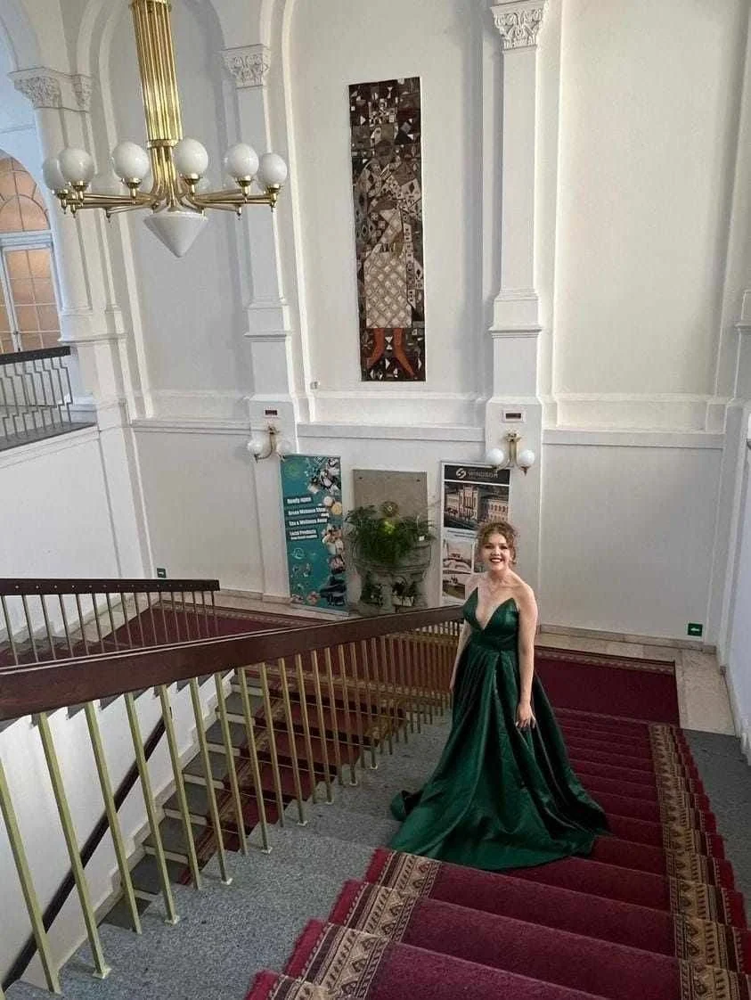

ვერცხლისფერი ბზინვარება
საღამოს
მომდგარი საღამოს კაბა მბზინავი დეკორით.
ჩვენი ნამუშევრები
შერჩეული ნამუშევრები ჩვენი ატელიედან — საღამოს კაბები, ყოველდღიური მოდელები და საბავშვო სამოსი. აღმოაჩინეთ თითოეული დეტალი.
საღამოს
მომდგარი საღამოს კაბა მბზინავი დეკორით.

საღამოს
ყვითელი მხრებგადაწეული კაბა გაშლილი ბოლოთი.
ყოველდღიური
მუქი ლურჯი პიჯაკი და ქვედაკაბა კონტრასტული თეთრი საყელოთი.

ტრადიციული
შინდისფერი და მონაცრისფრო სამოსი ორნამენტული დეტალებით.

საქორწილო
თეთრი საქორწილო კაბა გრძელი შლეიფით.

საბავშვო
ყვავილებიანი საბავშვო კაბა მოცულობითი სახელოებით.

საღამოს
ცისფერი კაბა დეკორითა და წინ შეკრული ნაკეცებით.
ყოველდღიური
მომდგარი პიჯაკისა და შარვლის კომპლექტი.

საღამოს
სპილოსძვლისფერი კაბა კისერთან შეკრული ზედა ნაწილითა და ნაკეცებიანი წელით.

საბავშვო
მუქი ლურჯი საბავშვო კაბა კრემისფერი საყელოთი და ბაფთით.

საღამოს
მუქი მწვანე გრძელი კაბა შლეიფით.

საბავშვო
წითელი საბავშვო კაბა მხრებზე ბაფთებით.

საღამოს
ღია ლაიმისფერი კაბა ღია ზურგით.

საღამოს
მუქი ლურჯი გრძელი კაბა მჯდომარე პოზაში.
თქვენი იდეით დავიწყოთ
გაგვიზიარეთ თქვენი ჩანაფიქრი. შესაძლებლობებს ერთად განვიხილავთ.